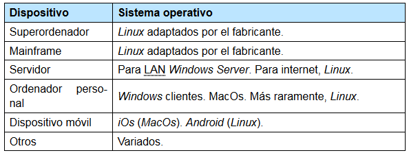

Familias
Revisaremos brevemente los principales sistemas operativos empleados en la actualidad. Si los dividimos en familias, podemos distinguir lo siguiente:
-
Windows
: Es la familia de SSOO que Microsoft desarrolló para computadoras personales compatibles con IBM. Windows se usa principalmente en sistemas de escritorio domésticos y profesionales y en servidores que proporcionan servicios de red a redes corporativas locales (Active Directory).
- La rama de clientes : Windows XP, Windows Vista, Windows 7, Windows 8, Windows 10.
- La rama para servidores : Windows Server 2003, Windows Server 2008, Windows Server 2012, Windows Server 2016, Windows Server 2019. Además, la versión 8 de Windows Phone también está basada en el núcleo de esta rama. Nota: Las versiones anteriores de sistemas para dispositivos móviles se basaron en un desarrollo separado llamado Windows CE
-
* BSD
: El UNIX original fue creado en AT &T, luego cedido su código fuente para estudio durante años, hasta que la Universidad de Berkeley hizo añadidos como la pila de protocolos TCP/IP (base de Internet y redes locales) y comenzó a redistribuir el resultado con el nombre BSD (Berkeley Software Distribution). AT &T reclama su propiedad de UNIX y pone una demanda. Hay distribuciones derivadas de aquellos BSD que continuaron desarrollándose hasta el día de hoy:
- FreeBSD , posiblemente la distribución más usada. Se empleó parcialmente para la creación del núcleo MacOS, XNU.
- OpenBSD , distribución enfocada a la seguridad y dentro de la cual nació OpenSSH, que es la implementación gratuita más empleada del servicio SSH.
- NetBSD .
- Linux : Nace cuando se está litigando por BSD. Sistema operativo similar a UNIX para computadoras compatibles con IBM con licencia GPL y consiguió muchos programadores gracias a la naciente internet. Publicó la noticia de su trabajo en un grupo de usenet. El resultado acabó siendo el sistema UNIX más extendido en la actualidad en el que colaboran no solo los voluntarios, sino también las grandes empresas del sector de las TIC (IBM, Google, Novell, AMD, Dell, Hewlett-Packard, etc.).
A excepción en el sector de los ordenadores de sobremesa (donde su uso es minoritario), se usa ampliamente en super servidores, servidores de internet, dispositivos móviles (a través de Android) y como sistema integrado en otro tipo de dispositivos como conmutadores y enrutadores.
-
MacOS
: Es el sistema operativo usado por máquinas diseñadas y comercializadas por Apple. A pesar de la coincidencia, hay dos sistemas operativos diferentes que reciben este nombre:
- Los MacOs hasta la versión 9, conocidos como MacOs clásicos .
- Las MacOs de la versión 10 , que es la usada hoy en día y que antes recibían los nombres de MacOsX y, más tarde, simplemente OsX, antes de adoptar el antiguo nombre con el que se conocía el sistema operativo Macintosh .
El MacOs actual es un UNIX que proviene de FreeBSD y NeXTSTEP (un sistema creado por la empresa NeXT con el que Steve Jobs acabó después de dejar Apple). MacOs es la base para iOS, el sistema operativo que Apple usa en sus dispositivos móviles.
Tipos de dispositivos
Es conveniente revisar los tipos de dispositivos de hardware para analizar qué sistemas operativos prevalecen en ellos.
En la tabla conviene especificar los sistemas operativos empleados en la sección de otros dispositivos como dispositivos de red, televisores inteligentes, NAS, etc. Este es el mercado más variado para los sistemas operativos , ya que en muchos casos son desarrollos hechos por el propio fabricante. Puede destacarse:
- Cisco iOS en los dispositivos de red de esta compañía .
Nota: Este sistema no debe confundirse con el iOS de Apple: son dos sistemas operativos no relacionados, aunque comparten un nombre . De hecho, Cisco autorizó a Apple a usar tal nombre . .
- VXWorks , sistema operativo en tiempo real, que se encuentra en aviones o coches